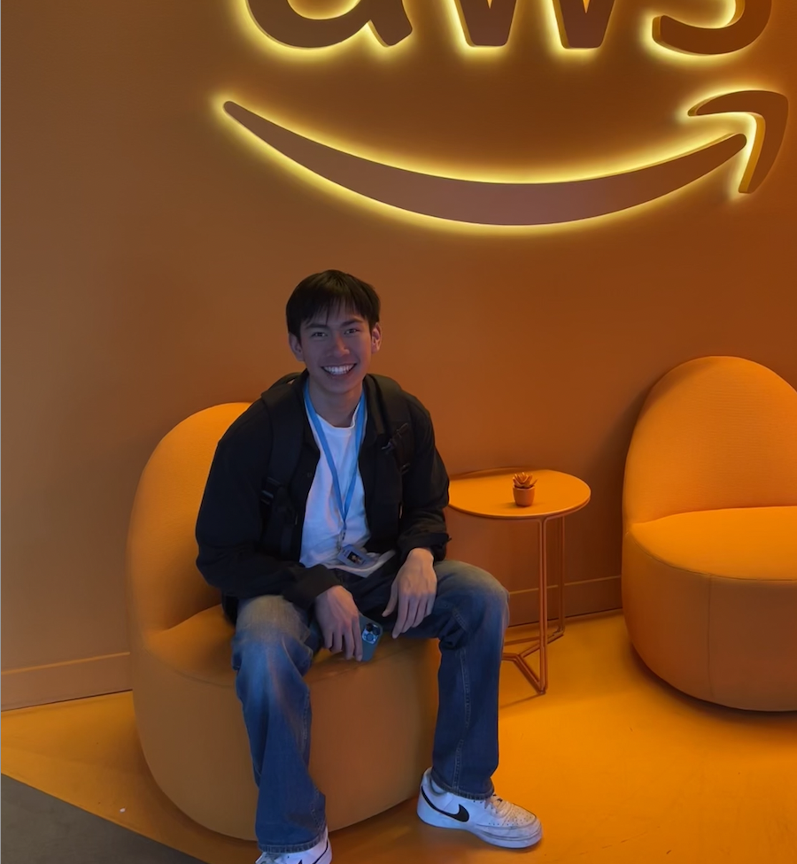

Hi, I'm Timothy, a student and software engineer. I'm most interested in the applications of data in software development, analytics, and ML/AI.
Let's connect! Reach me at timothy.chen5@pepperdine.edu.
Highlights
[10/2024] Joined the a16z College Talent Network
[08/2024] Awarded the Edison Scholarship by natural science faculty
[05/2024] Joined Amazon as a data engineering intern on the Alexa Enterprise team in Seattle, WA
[01/2024] Joined ensa.ai as a part-time MLE intern, building a video processing computer vision pipeline
[12/2023] Paper on autonomous RC cars in kinetic art published with funding from the AYURI grant
[08/2023] Returned to Pepperdine University's internal app development team. Owned development for the rework of esign.pepperdine.edu.
[07/2023] Awarded the Northrop Grumman Endowed Scholarship for excellence in engineering
[07/2023] Article written about me by Pepperdine University's official Seaver Newsroom
[06/2023] Oral presentation of research at the ISAPA '23 held in Dunedin, New Zealand
[05/2023] Joined Samsung as a software engineer intern on the data intelligence team in Austin, TX
[04/2023] Paper on language processing for research publications
[04/2023] Placing in my first hackathon at the CTG Hackathon hosted by Morgan Stanley
[12/2022] Paper on deep learning for ecology applications
[11/2022] Presented research at the SCURR '22 at Pepperdine University
[08/2022] Joined Pepperdine University's internal app development team as a part-time software developer. Owned development for sso.pepperdine.edu.
[08/2022] Teaching Assistant for Dr. Stan Warford for 5 semesters
[07/2022] Awarded Keck Data Science Grant for significant research contribution
[07/2022] Awarded the Darnell Scholarship by computer science faculty
[05/2022] Began summer research with the Keck Data Science Institute at Pepperdine University on big data and artificial intelligence